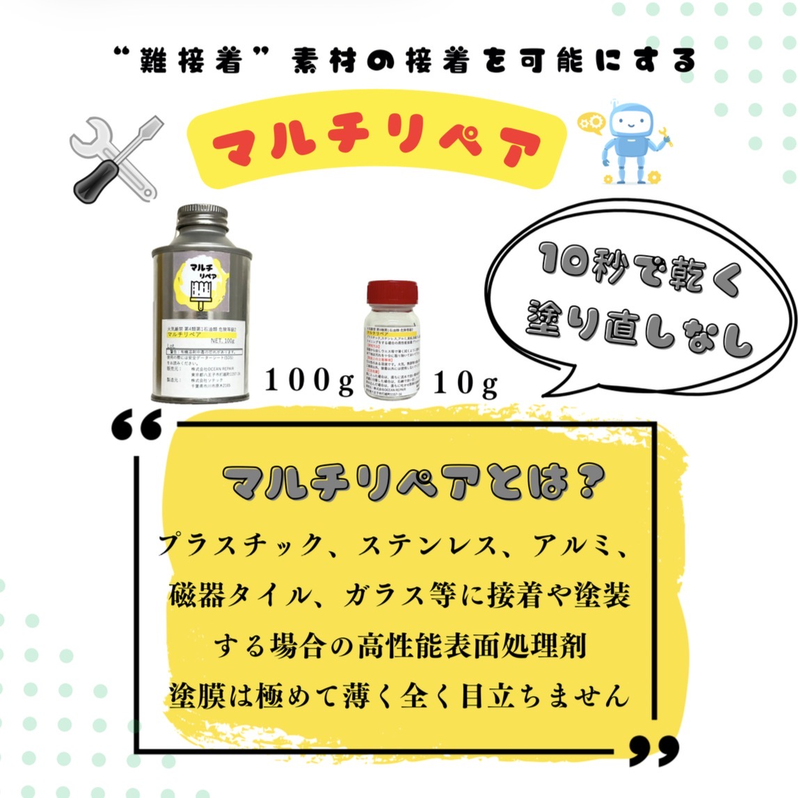
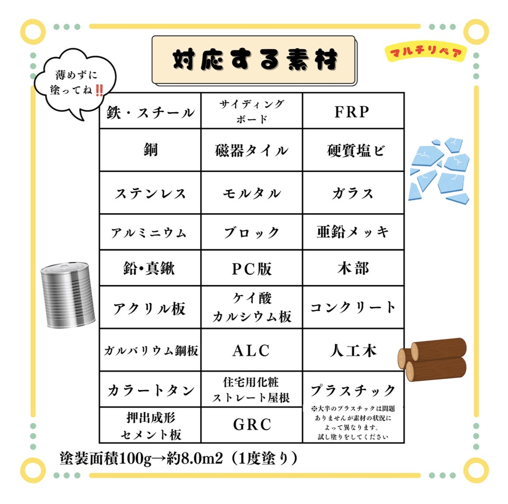
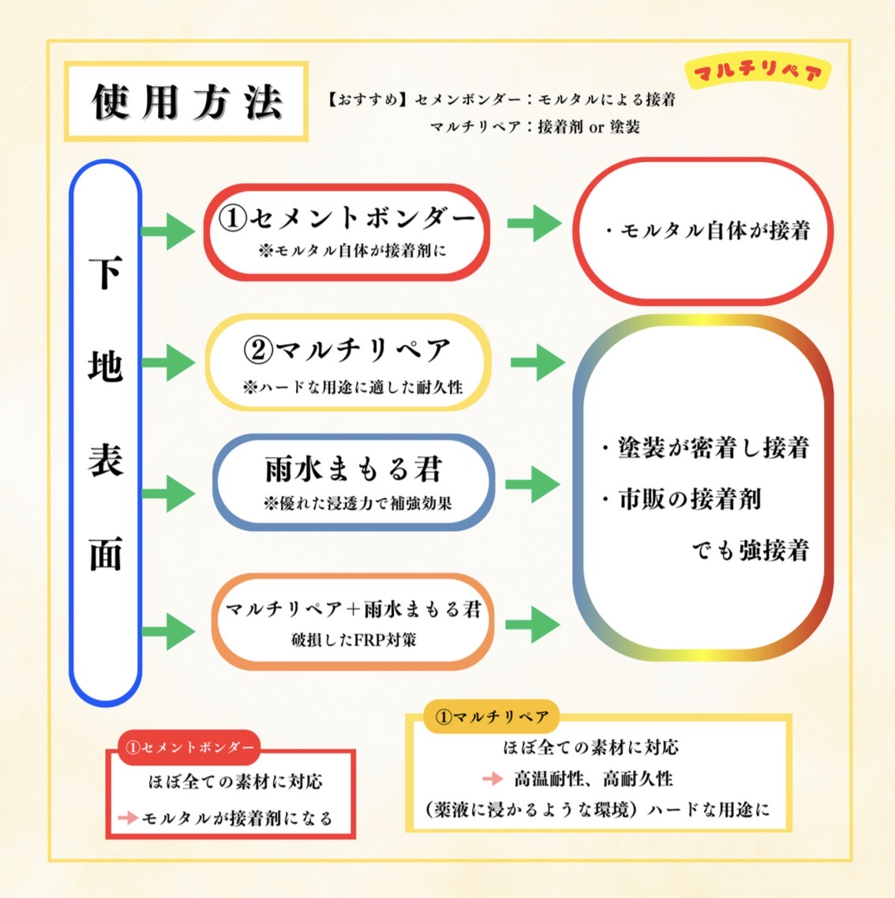

マルチリペアは、接着プライマーとして機能する高性能表面処理剤です。 接着剤ではなく、被着体の表面を接着剤が接着しやすい状態に変化させる材料です。 恒久的な施工が可能であり、高温下でもその接着能力を維持します。
ステンレス、アルミ、亜鉛、加硫ゴム、磁器タイル、ガラス、石材、FRPなどに最適。 ウエスにしみ込ませて拭くだけで、接着剤や塗料が接着しやすい状態を作ります。 塗膜は非常に薄く、目に見えないレベルです。



株式会社 OCEAN REPAIR
東京都八王子市打越町 1157-16
E-mail: oceanrepair@e-maul.jp
☎ 042-636-7360
株式会社ソテック
千葉県市川市原木 2165